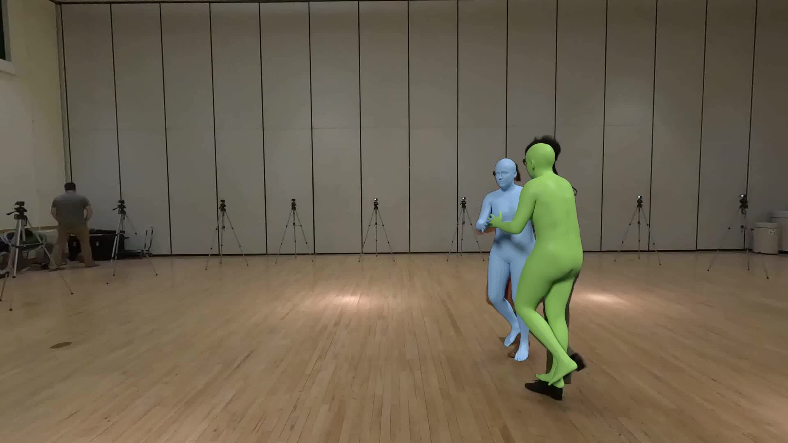
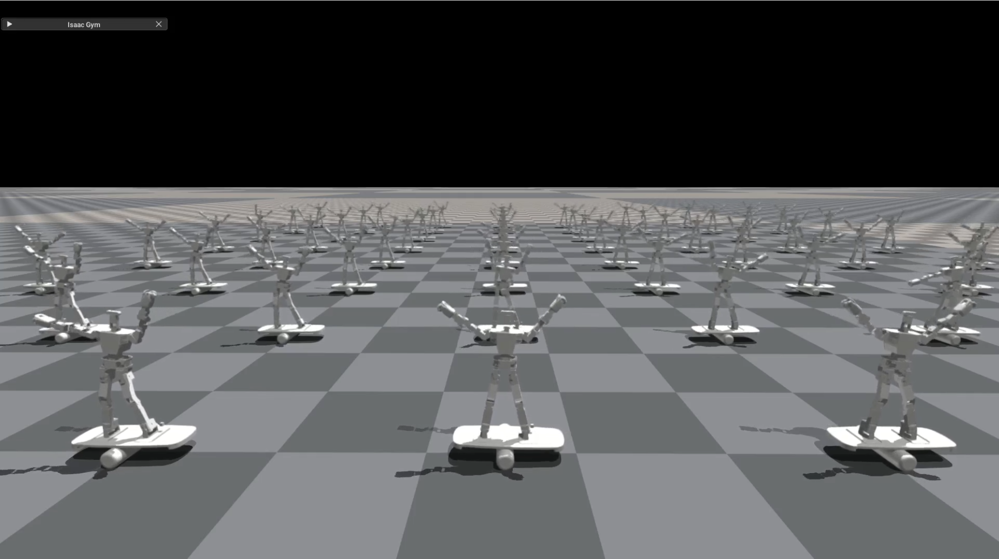
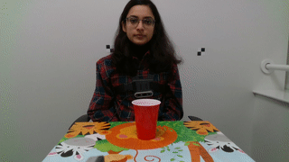

|
Jyun-Ting Song
I am a second-year master's student at the Robotics Institute, Carnegie Mellon University,
advised by Prof. Kris Kitani.
Previously, I earned my B.S. in Electrical Engineering from National Taiwan Normal University,
where I was advised by Prof. Jacky Baltes.
|

|
Publications |
|

|
Harmony4D: A Video Dataset for In-The-Wild Close Human Interactions
Rawal Khirodkar*, Jyun-Ting Song*, Jinkun Cao, Zhengyi Luo, Kris Kitani Neural Information Processing Systems (NeurIPS), 2024 project page / code / paper / data A large-scale multihuman dataset captured in in-the-wild environments, featuring diverse dynamic activities |
|

|
Reinforcement Learning and Action Space Shaping for a Humanoid Agent in a Highly Dynamic Environment
Jyun-Ting Song, Guilherme Christmann, Jaesik Jeong, Jacky Baltes Springer's Studies in Computational Intelligence, 2023 project page / paper RL algorithm structure based on Proximal Policy Optimization (PPO) to train a humanoid agent to play a balance board in Isaac Gym |
|

|
The CORSMAL Benchmark for the Prediction of the Properties of Containers
Alessio Xompero, et al. IEEE Access, 2022 project page / paper / code Estimate mass, type, and fill level of containers using a multimodal dataset (visual, audio) |
|
Feel free to steal this website's source code. Do not scrape the HTML from this page itself, as it includes analytics tags that you do not want on your own website — use the github code instead. Also, consider using Leonid Keselman's Jekyll fork of this page. |